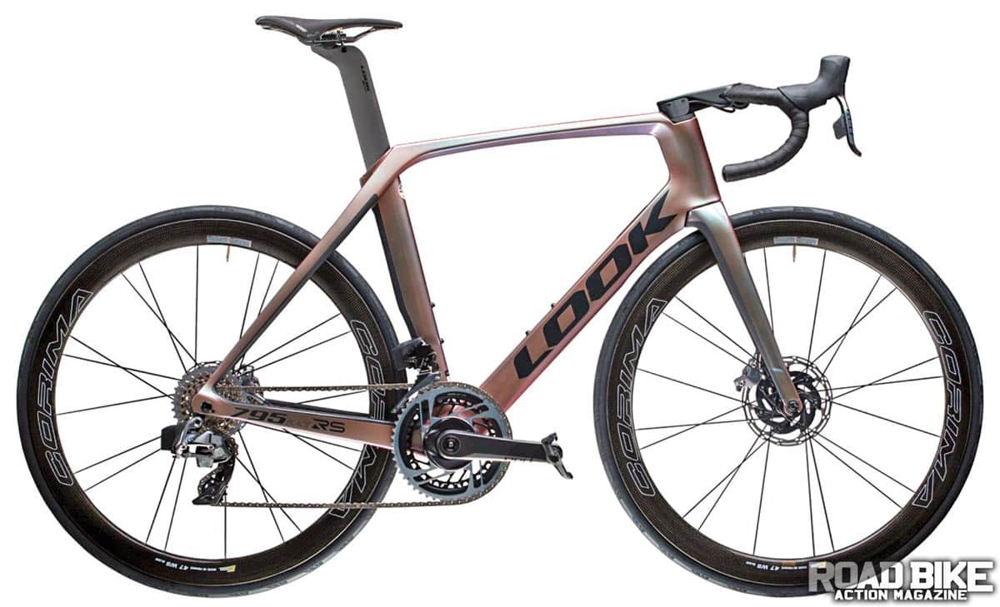
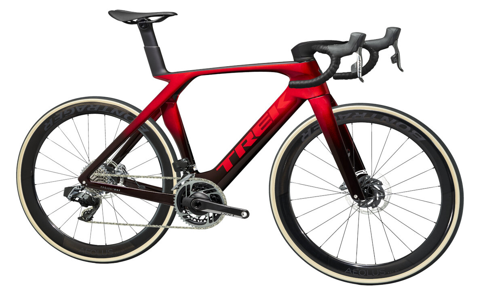

Bikes Section
LOOK 795 BLADE RS

The 795 is the French brands aero road bike, and the frame is 300 grams less than its predecessor.
Price : ₱597,740
BIANCHI OLTRE XR4

When it comes to top-flight racing bikes, Bianchi has a stable of performers that includes the shapely Oltre XR4. With a 12-speed Shimano
Price : ₱532,532
BMC TIMEMACHINE

BMC redesigned the Timemachine to decrease air separation and keep air flowing across the back end of the frame and built in a storage
Price : ₱695497.66
TREK MADONE

By combining refined Kammtail shaping for the frame tubes with the new SLR handlebar/stem combo, Trek claims a 19-watt energy